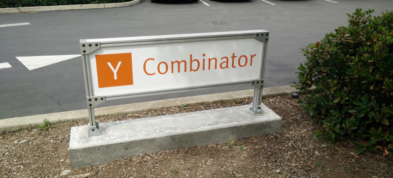

A month ago me and my co-founder did an application for YC, and last week we were lucky enough to be selected for an interview, along with other startups. We got called all the way to California with not even a week of notice, everything paid… definitely a bit more serious than a phone call.
We prepared a lot during the last few days, reading what people say online, meeting previous YC companies, doing mock interviews with YC alumni. Some of that was YC specific, as we knew they are very product-focused. Little aside here: I am an engineer and I really dislike sales talk, because most sales words are so vague that are worthless at describing specifics. It was very refreshing to see that YC thought it the same way I did.
The interview only lasted 10 minutes, although we got a second interview with other partners, so they had listened to our story twice. There were 3-4 groups of 3 partners doing interviews for max 10 min throughout the day, for 2 weeks, so you can imagine there were a lot of companies there, all with their online application accepted. I have spoken with a few of them, all clearly smart, although at that stage you practiced your pitch so many times that you do not want to hear yourself having to say it again :-)
If there is one take-away for me is: explain the product, as opposed to sell the product. Explain it in a way that someone technical might be able to rebuild it. Describe it well in a way that sales processes, addressable markets, customer acquisition strategies and costs, LTV, who buys and who uses it, all these should all come naturally from the product description. You should have a good answer for all these, even if not perfect yet.
In the same evening we received a negative answer, along with some good feedback. When things do not go as you would, it is easy to be dismissive, but really, there is a lot that could be learnt if you were in. I would definitely go back if we had the chance.